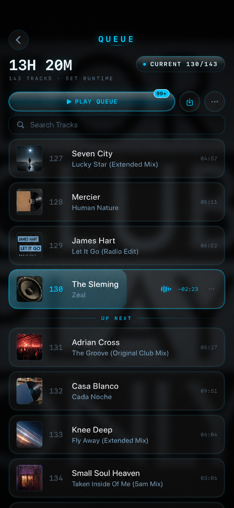
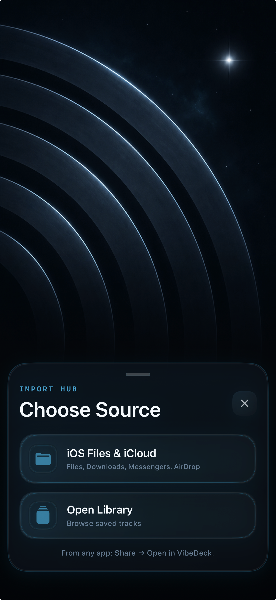

Playback
Waveform, timing, transport controls, and pitch/filter on one focused deck.
iOS performance music deck
A dark, focused control surface for playback, queue work, pitch, filter, EQ, and live-feeling track preparation.

Built around the screen that matters most: the player. Queue, EQ, pitch, and sound tools orbit the track instead of stealing focus from it.
Workflow
VibeDeck keeps the current track readable while the queue and EQ stay one move away. The interface is built for low light, fast scanning, and deliberate sound shaping.



Waveform, timing, transport controls, and pitch/filter on one focused deck.
Search, current track, up-next flow, runtime, artwork, and set preparation.
EQ, VibeMod, limiter, mono, side, and track-shaping tools for fast decisions.
App Store
VibeDeck 1.0 is in final preparation. The App Store link will appear here at launch.